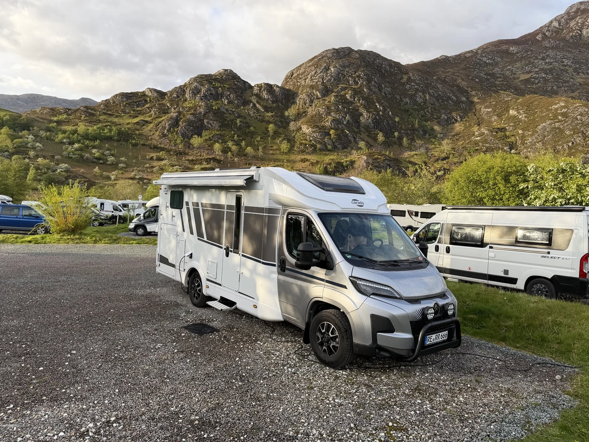

Unsere Neuwagen
Entdecken Sie Citroën und Subaru Neuwagen in Recklinghausen – vom Kleinwagen über SUVs und Vans bis zu Nutzfahrzeugen und VANDERER Campern.
VANDERER One & Two
Zwei kompakte Camper-Konzepte auf Basis des Citroën Berlingo XL. Entdecken Sie Schlafdach, Innenraumlösungen und Ausstattungsdetails.

VANDERER One
Das Aufstelldach schafft zusätzlichen Raum zum Stehen, Sitzen und Schlafen. Unten entscheiden Sie selbst, wie Sie Ihren Camper nutzen möchten.
- Komfortbett im Dach mit Unterfedersystem
- Livingroom oder Sleep & Storage optional wählbar
- Auch ohne Möbelmodul erhältlich

VANDERER Two
Ein Minicamper ohne Schlafdach – mit großer Liegefläche, praktischem Stauraum und viel Flexibilität für Ausrüstung und Alltag.
- Sleep & Storage Modul serienmäßig
- Kühlbox inklusive Akku bereits an Bord
- Multifunktionstisch für drinnen und draußen
Abbildungen zeigen teilweise Sonderausstattung. Herstellerangaben und Bildmaterial: VANDERER GmbH · Außenaufnahmen: Simon Abele. Ausstattung und Verfügbarkeit abhängig von Modell und Konfiguration.

Sie brauchen mehr Platz?
Wir sind selbst Camper und kennen individuelle Fahrzeug-Lösungen aus eigener Erfahrung. Vom Mini-Van für das Wochenende zu zweit bis zum Urlaub mit der ganzen Familie: Wir beraten Sie gern und vermitteln passende Wohnmobil-Lösungen über unser Netzwerk verlässlicher Partner.
Über Ihre Camper-Lösung sprechen ↗